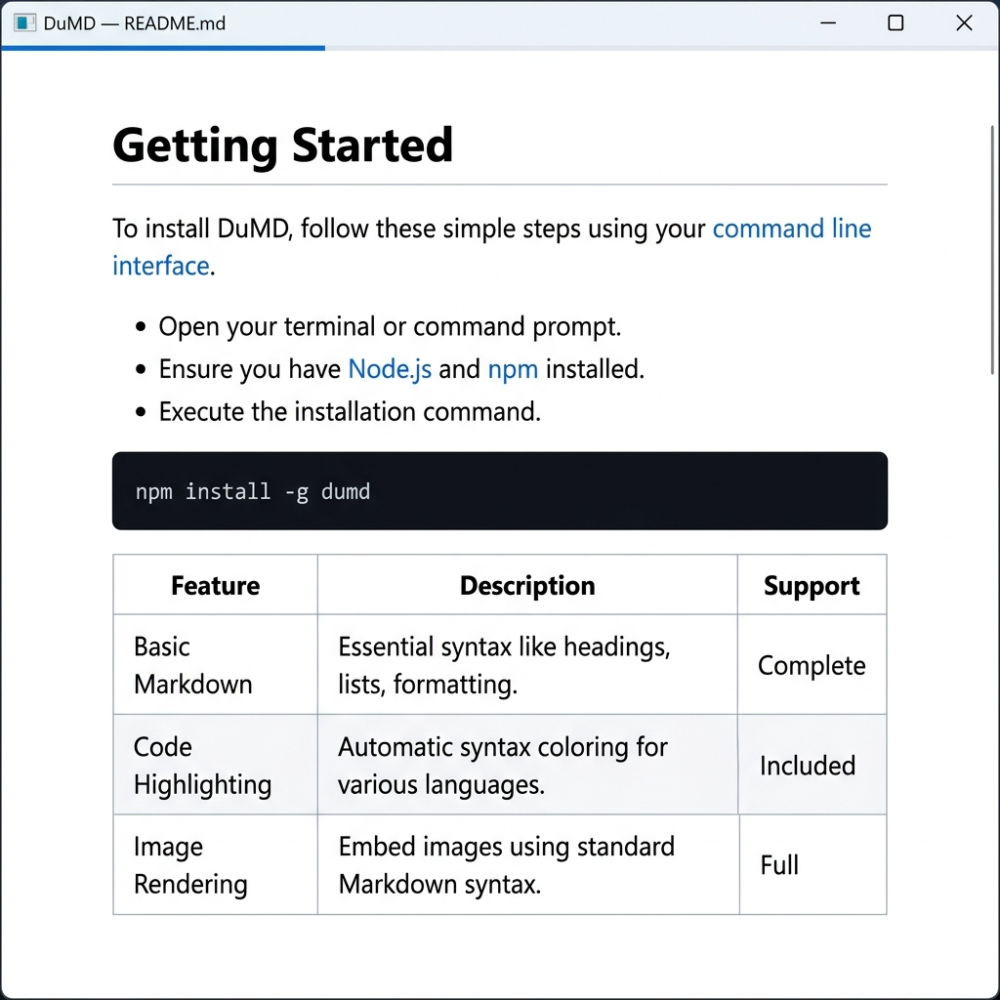

An ultra-minimalist, keyboard-driven desktop Markdown viewer.
Windows · macOS · Linux — single binary, no runtime dependencies
Light, Dark, and Sepia — switch anytime with a single keypress.

Light — Clean and crisp for daytime reading
Requires Go ≥ 1.25. On Linux and macOS a C compiler is needed too (Wails links WebView via cgo); Windows is pure Go.
go install -tags production github.com/ebdonato/dumd@latestBuild deps: libgtk-3-dev libwebkit2gtk-4.1-dev
go install -tags "production webkit2_41" github.com/ebdonato/dumd@latest@latest with a tag, e.g. @v1.3.2.
Prefer a prebuilt binary? Grab one from the latest release for Windows, macOS (ARM/Intel), or Linux.
Open any Markdown file straight from your terminal.
dumd README.mdLaunch it without a file argument to see a welcome screen with usage instructions. Relative .md links open in a new DuMD window; external links open in your default browser.
Built for people who just want to read a file — nothing more.
Binary under 18 MB, idle RAM under 60 MB.
Vim-style scrolling, spacebar page navigation, single-key theme switching.
Light, Dark, and Sepia, persisted across sessions.
No Node.js, no Python, no installers — just one executable.
Everything reachable without touching the mouse.
On macOS, use Cmd instead of Ctrl for zoom.